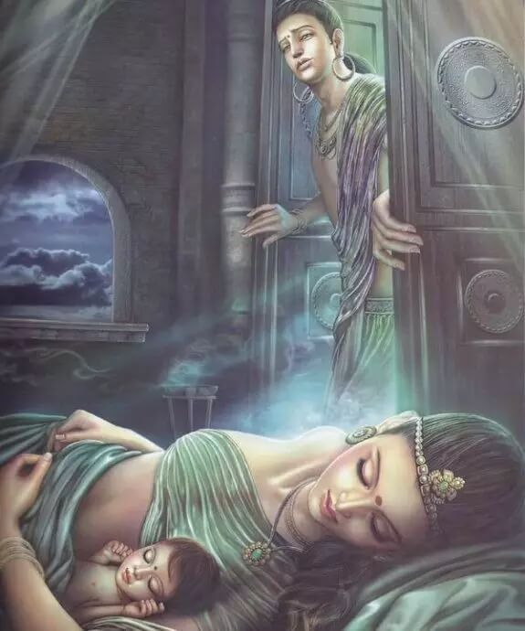
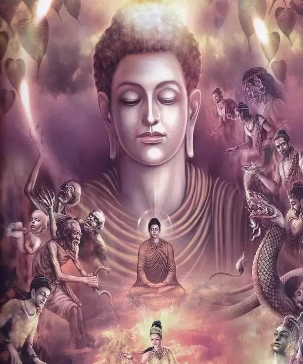

【第一次告别】
大迦叶，本名毕钵罗耶那，是树下生的意思，因他降生在树下，而有此名。他生长在一个富裕的贵族家庭，家里的富裕程度超过了国王。他比佛陀晚生十多年，从小聪慧，厌恶世间一切欲乐，惟以修道是从。年岁渐长后，父母为他操办婚事，他用了很多种办法，推辞拒绝，但终于还是无奈，迎娶了美丽的妙贤。
据说，他们的新婚之夜，是在沉默中度过的。妙贤愁眉不展，垂泪到天明引起了大迦叶的好奇，他问她，你为什么伤心？妙贤说，我一心修道，被父母逼迫与你成婚，这不是毁坏了自己的心愿了吗？大迦叶听后非常高兴，家里竟然给自己找到了一个和自己一样厌恶爱染，乐于清净修行的同修道友做眷属！他把自己的情况说给妙贤以后，两个人约定，“我若眠时汝当经行，汝若眠息我当经行”。他们共同实践，彼此成就道业。
这是大迦叶对妻子妙贤的第一次告别。他告别的是还未开始的婚姻。在他的心里，俗世的爱情，不是他今生的任务。他要做的，就是完成觉悟，完成使命。
【夫妻楷模】
其实看到这一段的时候，我真的很羡慕他们。因为他们这样的姻缘，在世俗的情感纠葛当中，实属罕见。更多的人，以欢喜冤家的缘分相遇，为满足欲望而奔波，有的人干脆是怨偶，是互相欠债为着偿还讨要而来的；也有相安无事的，但终其一生，完成了人的各种角色，排队走，跟着潮流走，甚少关怀内心世界，偶有探询，因无解而作罢；也有些人，有向往修道的心，却因为此身浊重，欲深难持，而终于做了逃兵。
大迦叶和妙贤，在他们很年轻的时候，就少欲而慕道，能够尝到法喜，深知法喜远超世乐，这是他们的天资，也是他们的福报。而我也知道，天资和福报，并非不公平地仅仅降临到某几个人的身上，它是修行的累积。以佛法来参照，每一个在六道里轮转不休的人，如果在前世，前一道里听闻过善法，修持过善法，那么，我们在觉知的此生，一定会有前面无数轮转积累下的福报来做我们当下修行的基础。大迦叶和妙贤的锐利根器，淡泊欲身，就为我们示现了功德累积后与众不同的天资。
【第二次告别】
迦叶与妻子，对父母，他们行孝道，扮夫妻；对对方，他们修梵行，为道友。这样的生活，经历12年，他们的因缘逐渐成熟。在大迦叶的父母谢世后，大迦叶不再有违逆父母心愿的顾虑，他目睹农人在耕田时，锄头伤及无数土中生灵，心中痛苦无法解决，在家做事，举手投足，都在造业，而业不尽，六道轮回不得出，他真的着急了。与此同时，妙贤听闻家中仆役说榨油时死了很多小虫，对小虫的悲心和对人类的口腹之欲之间的矛盾，令妙贤也觉得当下的处境需要反思。就在他们共同面对棘手思维的时机，大迦叶决定离家修道。
他对妙贤说，我走，是为了寻找明师。我若寻到，必来接你。
这是大迦叶和妙贤的第二次告别。
这次告别，是大迦叶对俗世生活的告别，从此以后，他了断了伦常里的进退，终于可以在修行的天地里自由、深入地用功了。这次告别，也是大迦叶对妙贤的承诺。我不和你结夫妻的缘，但我与你允同修梵行的诺。我若得遇明师，必记挂你还在红尘漂泊；我若得度，必来度你。他们之间的长揖告别，让我泪热，这样的放手，超越了男女爱人的痴缠，道尽知音同修之间的酬答。
【前世姻缘】
妙贤曾经是个贫苦的女子，为了补佛像，乞讨集资，筹得金珠，而大迦叶彼时是锻金师，二人合力将佛像缺处补足，从此发下誓言，常为夫妇，身为金色。后来及至大迦叶被父母逼婚，他发难说，造一金像，若有女子象它，就娶进家门，不成想，妙贤竟和金像如孪生一般。
这或许是传说。但一个人能遇到相应的另一个人，不是彼此消解善业，而是互相增长智慧，恋爱中的我们，心中都清楚：这样的相遇，必有前缘。大迦叶在寻访之中，遇到了佛陀，经过再三的观察后，于佛座前剃度。在佛陀准许女众出家，并且成立了比丘尼教团后，大迦叶最先想到的就是把妙贤接到教团来。四年的分离中，妙贤为了求法，早已疏散家财，误入外道。当她来到教团后，因为貌美也遭受了更多的诽谤。美丽，在俗世里是人所钦羡的资本，在修行中却是自恋，执着的障碍。妙贤为了明志，她不再出外托钵。大迦叶听说后，心中怜悯，在自己托钵乞食后，将食物分一半给妙贤。大迦叶的行为受到了搬弄是非的人的讥嫌，说：此二人原本就是夫妻，怎可能清净无染？如今同食一粥，当初怎会分床而眠？
【再次告别】
讥嫌本是妄语，大迦叶阔心无碍，但为了令他人停止口业，也为了激励妙贤，他沉默，离开，不再和妙贤来往。他没有向众人辩解，也没有和妙贤嘱托。他只是沉默了。
这是大迦叶和妙贤的第三次告别。
尽管没有任何言语，但水中冷暖，于拈花人自知。妙贤受到了更大的激励，道心非但没有退转，反而在逆缘中得以考验增长。不久之后，妙贤通过艰苦的修行，获得开悟。至此，曾经有过夫妻的名分，同修的因缘，道友的恩情，在一次次的告别中，悉数放下。由有欲望的凡人夫妻，到少欲知足的优婆塞和优婆夷，再到无欲则刚的阿罗汉，大迦叶与妙贤，完成了一次又一次的蜕变和成长。
【拈花微笑】
大迦叶以一己的放下，悲深行苦。剃度后八天便得到开悟。他是结集佛说正法的组织者，三藏典籍得以存世流传，其首功不可磨灭。
他与佛法意相通，佛陀称之为“迦叶功德，与我不异”。他在灵山会上的破颜微笑，成为禅宗的着名公案，也是中国禅宗的西天始祖，他的精神是中国禅宗思想萌生的源头。而这样的始祖，竟是以苦行戒行来示范的。
大迦叶告别的不仅仅是爱情，他告别了一切欲望的纠缠，从幻相里修出实相，一再告别，一再离开。他是一个告别了富裕生活，却又走进富裕境界的行者。
【头陀第一】
大迦叶曾经向一个一贫如洗的老婆婆乞食，老婆婆羞愧痛哭，说，我连一口粥都没有，不能施舍于你。大迦叶却对老者说，有意布施的人，即非穷人；知道惭愧的人，即是穿着法衣的人。老婆婆感动了，将瓦片里残存的米汁布施给大迦叶。大迦叶为赞许老婆婆的布施，不让她忐忑不安于饭食的鄙陋，他毫不犹豫地将米汁咽下！他这么做，只是为了让赤贫的人有机会能种下福田！即便赤贫，也能布施，也能分享！
从苦行里看到舍离，从贫寒里修出富足，从艰辛里奋发出精进，由头陀行的信守，方能见证到中道的圆融。那么，痴缠的情爱，由此也被照见执取的痛，不能解脱的缘由。大迦叶，和他曾经的伴侣妙贤，是我们所有还在行路中沉浮的男女，能够作为明鉴的师尊！
李叔同，是声名远扬的音乐家、美术教育家、书法家、戏剧活动家，作为一代才子风华于世，后又剃度为僧，法名演音，号弘一，中国近代4大高僧之一。
西湖边杨柳依依、水波滟滟，没有比西湖更合适送别的场景了。
1918年的春天，一个日本女人和她的朋友，寻遍了杭州的庙宇，最终在一座叫“虎跑”的寺庙里找到了自己出家的丈夫。
38岁的他原来是西湖对岸浙江省立第一师范学校的教员，不久前辞去教职离开学校，在这里落发为僧。十年前他在日本留学时与妻子结识，此后经历了多次的聚散离合，但这一次已经是最后的送别，丈夫决定离开这繁华世界，皈依佛门。
几个人一同在岳庙前临湖素食店，吃了一顿相对无言的素饭。丈夫把手表交给妻子作为离别纪念，安慰她说，“你有技术，回日本去不会失业”。岸边的人望着渐渐远去的小船失声痛哭，船上的人连头也没有再回过一次。
这个可怜的日本女人，可能至死也不会明白她的丈夫缘何薄情寡义至此……是啊，世间还有什么比此情此景更残忍，更让人心碎的呢？我读到此放声大哭，泪如雨下。
那时候我还很年轻，我对绝世才子李叔同恨得咬牙切齿，视他为世间最薄情寡义、最自私自利的男人。他的万般才情，在我的心目中倾刻间化为云烟。从此，世间再无那个会作诗、会填词、会书法、会作画、会篆刻、又会音乐、会演戏……的李叔同，只有一代名僧弘一大师！
若干年后，我读到了李叔同在出家前写给日本妻子的一封信。
诚子：
关于我决定出家之事，在身边一切事务上我已向相关之人交代清楚。上回与你谈过，想必你已了解我出家一事，是早晚的问题罢了。经过了一段时间的思索，你是否能理解我的决定了呢？若你已同意我这么做，请来信告诉我，你的决定于我十分重要。
对你来讲硬是要接受失去一个与你关系至深之人的痛苦与绝望，这样的心情我了解。但你是不平凡的，请吞下这苦酒，然后撑着去过日子吧，我想你的体内住着的不是一个庸俗、怯懦的灵魂。愿佛力加被，能助你度过这段难挨的日子。
做这样的决定，非我寡情薄义，为了那更永远、更艰难的佛道历程，我必须放下一切。我放下了你，也放下了在世间累积的声名与财富。这些都是过眼云烟，不值得留恋的。
我们要建立的是未来光华的佛国，在西天无极乐土，我们再相逢吧。
为了不增加你的痛苦，我将不再回上海去了。我们那个家里的一切，全数由你支配，并作为纪念。人生短暂数十载，大限总是要来，如今不过是将它提前罢了，我们是早晚要分别的，愿你能看破。
在佛前，我祈祷佛光加持你。望你珍重，念佛的洪名。
叔同戊午七月一日
1918年，农历的正月十五，李叔同正式皈依佛门。剃度几个星期后，他的日本妻子，与他有过刻骨爱恋的日籍夫人伤心欲绝地携了幼子千里迢迢从上海赶到杭州灵隐寺，抱着最后的一线希望，劝说丈夫切莫弃她出家。这一年，是两人相识后的第11年。然而叔同决心已定，连寺门都没有让妻子和孩子进，妻子无奈离去，只是对着关闭的大门悲伤地责问道：“慈悲对世人，为何独独伤我？”他的妻子知道已挽不回丈夫的心，便要与他见最后一面。
清晨，薄雾西湖，两舟相向。
妻子:叔同——
李叔同:请叫我弘一。
妻子:弘一法师，请告诉我什么是爱？
李叔同:爱，就是慈悲。
你说你要削发出家
把世间的名利放下
你争我夺尔虞我诈虚度了多少年华
明知一切都是假，还是以假当真拼命发达
你说你要削发出家
把眷属情缘放下
累世间恩怨情仇在轮回中苦苦相加
厌倦了六道火宅却跳不出那情执难断的魔法
你说你要削发出家
把白发爹娘放下
曾经多少劫互为父子彼此循环牵挂
将此身舍给众生
成就无上菩提才是最好的报答
你说你要削发出家
把爱妻娇儿放下
不再遮风挡雨看护你长大
普度众生的功德胜过给你一切世间荣华

你说你要削发出家
把兄弟姐妹放下
离别的苦涩从生的那天就悄悄种下
今天的离别就是为了我们都能回到极乐的家
你说你要削发出家
把多年的小家放下
无数的磨难终于找到了久违的家
从此法履天涯
用甘露浇开众生心中的朵朵莲花

你说你要削发出家
把世俗的观念放下
异样的目光再也挡不住你前进的步伐
寻解脱，报佛恩的大愿在你心中生根发芽
你说你要削发出家
把我执断然放下
为了累世的父母脱离轮回不再受苦
一子出家九族生天的吼声使你欣然泪下
你说你要削发出家
法王座下早有你的袈裟
风霜雪雨无数磨难等待着你闯过关卡
一定不负佛恩坚忍不拔，不愧对这身袈裟
你说你要削发出家
随喜的泪水滑过我的脸颊
就让我从今日起至诚回向
愿你早披袈裟，成就人生最美的年华